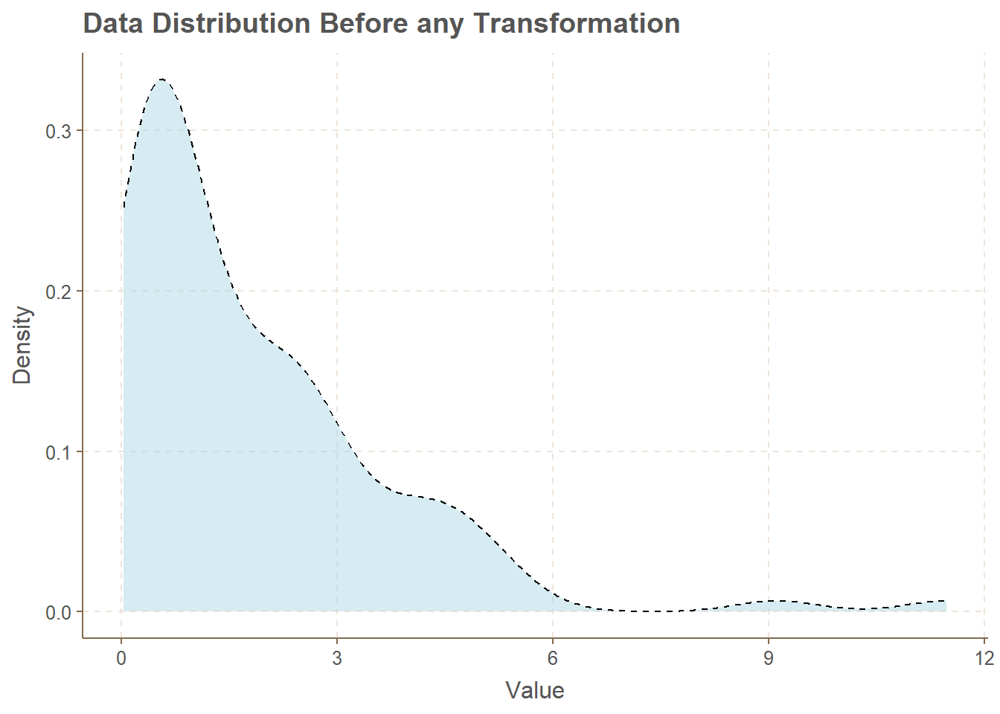
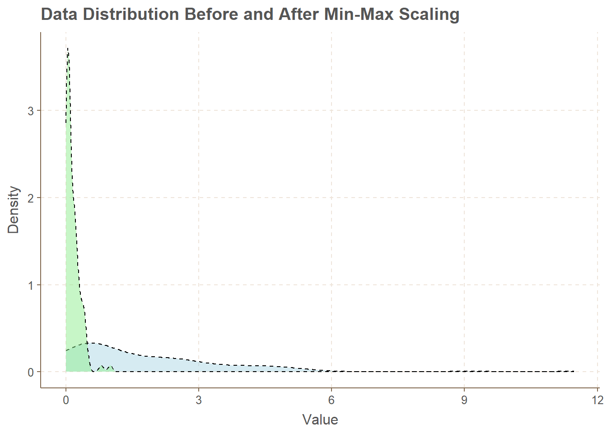
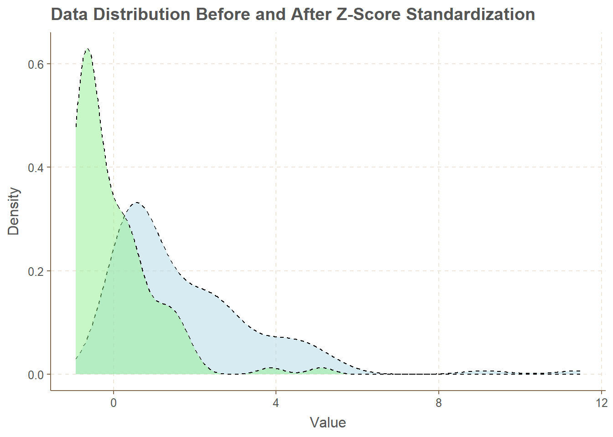
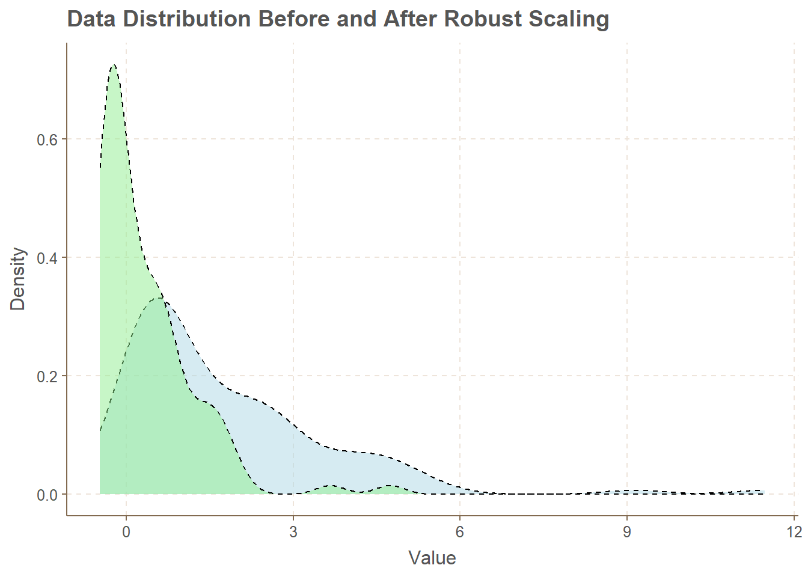
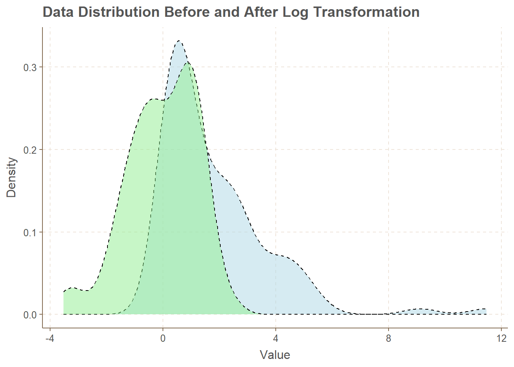
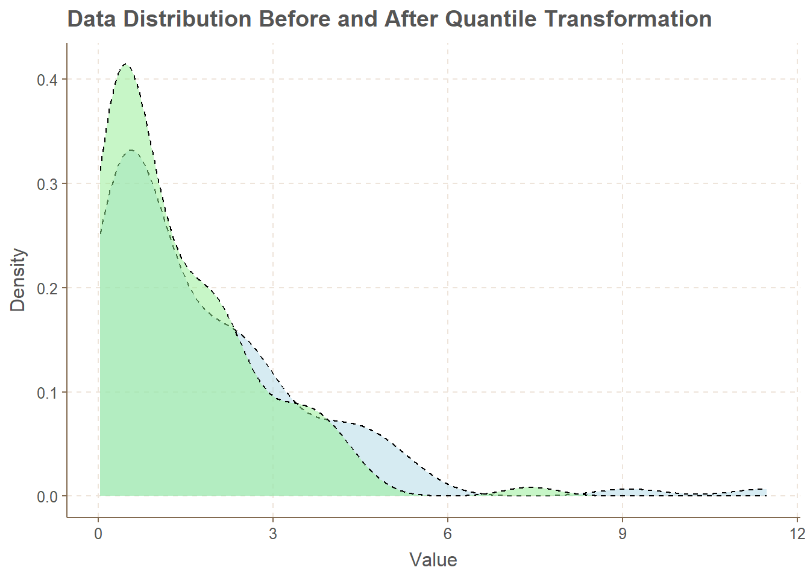
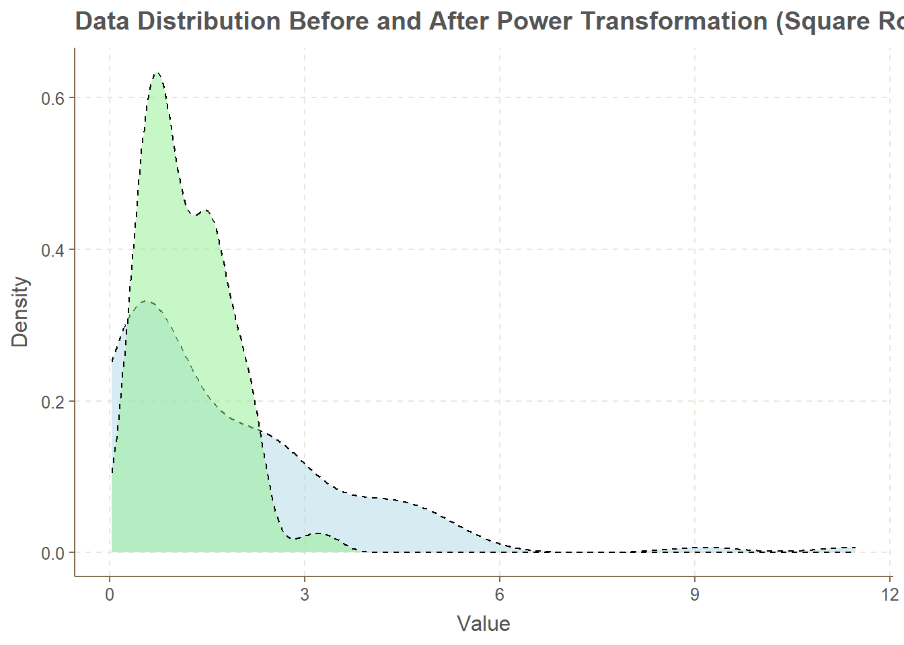
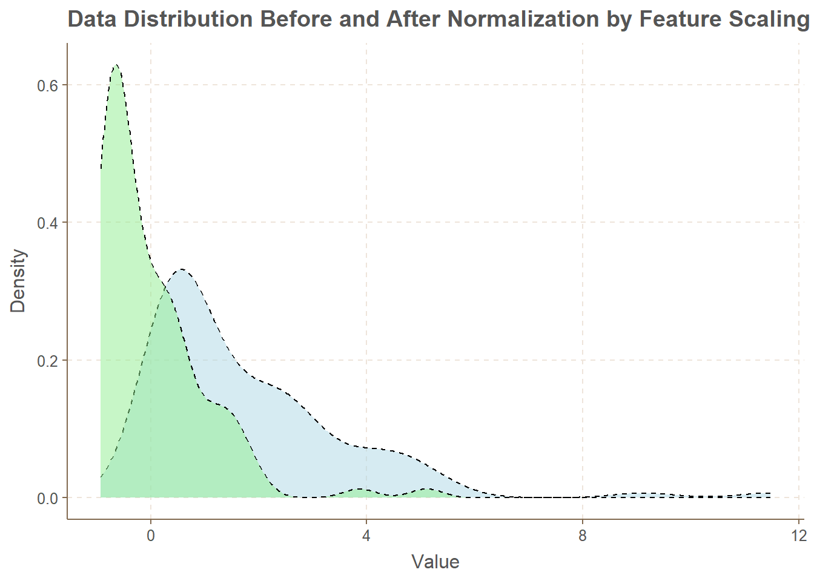

min_max_scaling <- function(x) {
return((x - min(x)) / (max(x) - min(x)))
}
z_score_standardization <- function(x) {
return((x - mean(x)) / sd(x))
}
robust_scaling <- function(x) {
median_val <- median(x)
iqr <- IQR(x)
return((x - median_val) / iqr)
}
log_transformation <- function(x) {
return(log(x))
}
quantile_transformation <- function(x) {
transformed_data <- fitdistr(x, "lognormal")
return(qnorm(pnorm(x, mean = transformed_data$estimate[1], sd = transformed_data$estimate[2])))
}
power_transformation <- function(x) {
return(sqrt(x))
}
winsorizing <- function(x, lower_limit, upper_limit) {
x[x < lower_limit] <- lower_limit
x[x > upper_limit] <- upper_limit
return(x)
}
feature_scaling <- function(x) {
scaled_features <- scale(x)
return(scaled_features)
}Methods for data normalization
Introduction
Data normalization is a crucial step in the data preprocessing pipeline, aiming to enhance the performance of analytical techniques and machine learning models by ensuring that the data features are on a consistent scale. In this exploration, we delve into various data normalization methods implemented in R. Each method serves a unique purpose, addressing specific challenges such as outliers, skewed distributions, or varying scales among features.
We will showcase the advantages and disadvantages of popular normalization techniques, providing practical examples along with visualizations using the ggplot2 library. These examples will illustrate how each method transforms the distribution of data, allowing you to make informed decisions based on your specific data characteristics and analytical goals.
Whether you are preparing data for statistical analyses or machine learning applications, understanding and applying appropriate normalization methods can significantly impact the accuracy and reliability of your results. Join us on this journey through diverse normalization techniques to gain insights into their application and effects on data distributions.
Happy Learning!! :)
Functions definitions
Data example
First let’s look to a not normal distributed data example
set.seed(13)
# Example data
data <- data <- rexp(100, rate = 0.5)
ggplot() +
geom_density(aes(x = data), fill = "lightblue", alpha = 0.5, color = "black", linetype = "dashed") +
labs(title = "Data Distribution Before any Transformation",
x = "Value",
y = "Density") +
scale_fill_manual(values = c("lightblue"))
Now lets transform the data
Min-Max Scaling
Advantages
- Simple and easy to implement.
- Maintains the original distribution shape.
Disadvantages
- Sensitive to outliers.
Example
# Plotting data distribution before and after Min-Max Scaling
ggplot() +
geom_density(aes(x = data), fill = "lightblue", alpha = 0.5, color = "black", linetype = "dashed") +
geom_density(aes(x = min_max_scaling(data)), fill = "lightgreen", alpha = 0.5, color = "black", linetype = "dashed") +
labs(title = "Data Distribution Before and After Min-Max Scaling",
x = "Value",
y = "Density") +
scale_fill_manual(values = c("lightblue", "lightgreen"))
Z-Score Standardization
Advantages
- Maintains the shape of the original distribution.
- Less sensitive to outliers compared to Min-Max Scaling.
Disadvantages
- Does not handle non-normally distributed data well.
Example
# Plotting data distribution before and after Z-Score Standardization
ggplot() +
geom_density(aes(x = data), fill = "lightblue", alpha = 0.5, color = "black", linetype = "dashed") +
geom_density(aes(x = z_score_standardization(data)), fill = "lightgreen", alpha = 0.5, color = "black", linetype = "dashed") +
labs(title = "Data Distribution Before and After Z-Score Standardization",
x = "Value",
y = "Density") +
scale_fill_manual(values = c("lightblue", "lightgreen"))
Robust Scaling
Advantages
- Robust to outliers due to the use of the median and interquartile range.
Disadvantages
- May not perform well if the data distribution is significantly different from a normal distribution.
Example
# Plotting data distribution before and after Robust Scaling
ggplot() +
geom_density(aes(x = data), fill = "lightblue", alpha = 0.5, color = "black", linetype = "dashed") +
geom_density(aes(x = robust_scaling(data)), fill = "lightgreen", alpha = 0.5, color = "black", linetype = "dashed") +
labs(title = "Data Distribution Before and After Robust Scaling",
x = "Value",
y = "Density") +
scale_fill_manual(values = c("lightblue", "lightgreen"))
Log Transformation
Advantages
- Stabilizes variance in data.
- Useful for dealing with highly skewed data.
Disadvantages
- Not applicable for zero or negative values.
Example
# Plotting data distribution before and after Log Transformation
ggplot() +
geom_density(aes(x = data), fill = "lightblue", alpha = 0.5, color = "black", linetype = "dashed") +
geom_density(aes(x = log_transformation(data)), fill = "lightgreen", alpha = 0.5, color = "black", linetype = "dashed") +
labs(title = "Data Distribution Before and After Log Transformation",
x = "Value",
y = "Density") +
scale_fill_manual(values = c("lightblue", "lightgreen"))
Quantile Transformation
Advantages
- Transforms data to a uniform distribution.
- Robust to outliers.
Disadvantages
- May not work well for small datasets.
Example
# Plotting data distribution before and after Quantile Transformation
ggplot() +
geom_density(aes(x = data), fill = "lightblue", alpha = 0.5, color = "black", linetype = "dashed") +
geom_density(aes(x = quantile_transformation(data)), fill = "lightgreen", alpha = 0.5, color = "black", linetype = "dashed") +
labs(title = "Data Distribution Before and After Quantile Transformation",
x = "Value",
y = "Density") +
scale_fill_manual(values = c("lightblue", "lightgreen"))Warning: Removed 1 rows containing non-finite values (`stat_density()`).
Power Transformation (Square Root)
Advantages
- Mitigates the impact of extreme values.
Disadvantages
- Not suitable for all types of data.
Example
# Plotting data distribution before and after Power Transformation (Square Root)
ggplot() +
geom_density(aes(x = data), fill = "lightblue", alpha = 0.5, color = "black", linetype = "dashed") +
geom_density(aes(x = power_transformation(data)), fill = "lightgreen", alpha = 0.5, color = "black", linetype = "dashed") +
labs(title = "Data Distribution Before and After Power Transformation (Square Root)",
x = "Value",
y = "Density") +
scale_fill_manual(values = c("lightblue", "lightgreen"))
Winsorizing
Advantages
- Effective in reducing the impact of outliers.
Disadvantages
- Alters the distribution of the data.
Example
# Plotting data distribution before and after Winsorizing
# Plotting data distribution before and after Normalization by Feature Scaling
ggplot() +
geom_density(aes(x = data), fill = "lightblue", alpha = 0.5, color = "black", linetype = "dashed") +
geom_density(aes(x = feature_scaling(data)), fill = "lightgreen", alpha = 0.5, color = "black", linetype = "dashed") +
labs(title = "Data Distribution Before and After Normalization by Feature Scaling",
x = "Value",
y = "Density") +
scale_fill_manual(values = c("lightblue", "lightgreen"))
Normalization by Feature Scaling
Advantages
- Scales each feature independently.
- Useful when features have different units or scales.
Disadvantages
- May not handle outliers well.
Example
# Plotting data distribution before and after Normalization by Feature Scaling
ggplot() +
geom_density(aes(x = data), fill = "lightblue", alpha = 0.5, color = "black", linetype = "dashed") +
geom_density(aes(x = feature_scaling(data)), fill = "lightgreen", alpha = 0.5, color = "black", linetype = "dashed") +
labs(title = "Data Distribution Before and After Normalization by Feature Scaling",
x = "Value",
y = "Density") +
scale_fill_manual(values = c("lightblue", "lightgreen"))